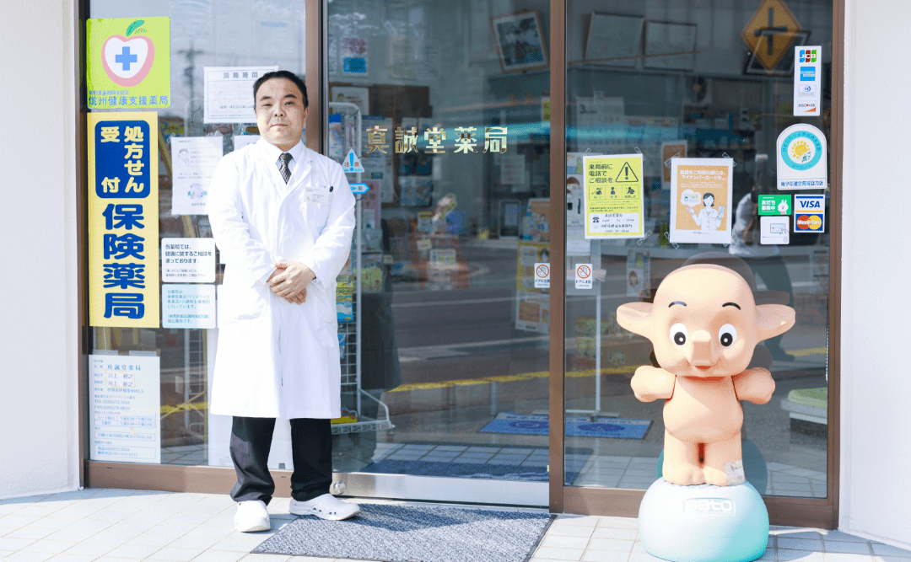
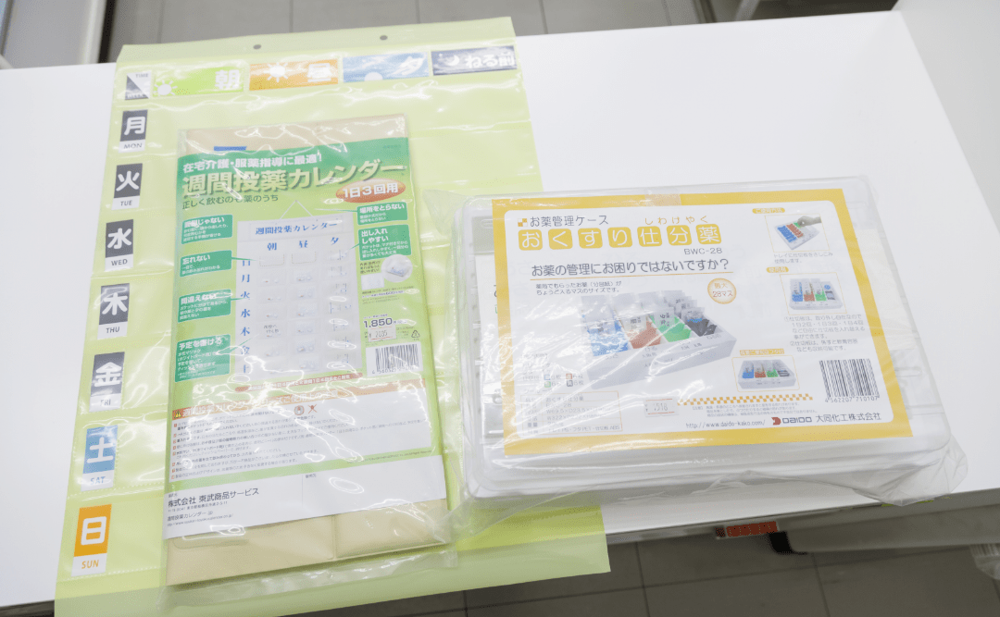
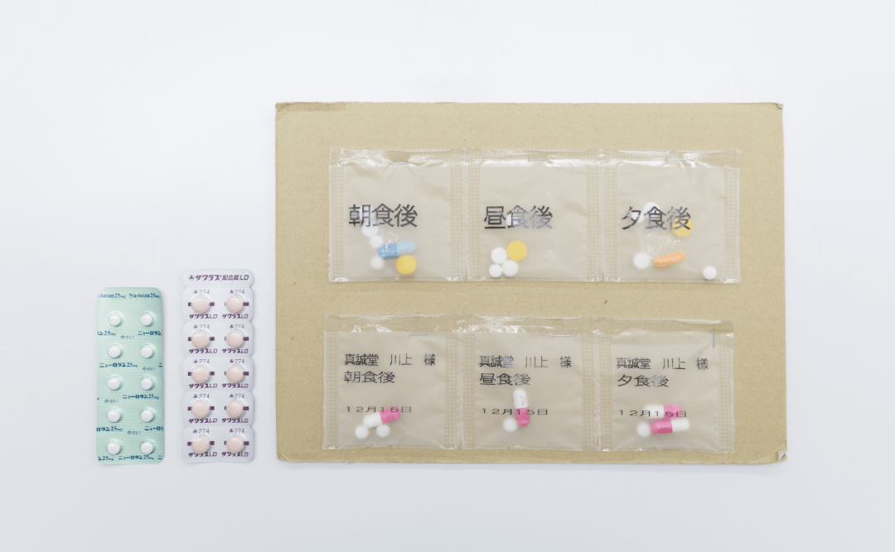
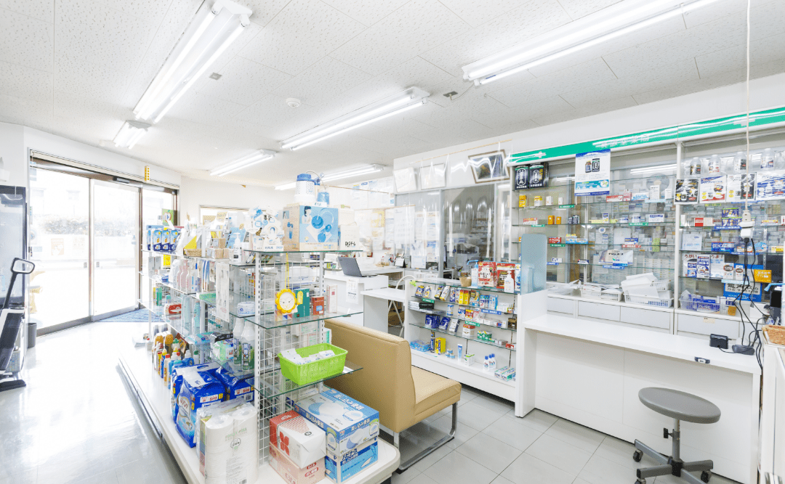

在宅訪問
在宅訪問紹介
ご高齢の方や障がいをお持ちの方など、通院が厳しい方向けに訪問医療を実施しています。
患者様一人ひとりに寄り添った問診や治療、お薬の処方を行います。
患者様もご家族もお家で安心して頂けるよう、実際に来院された際と同様の対応を致します。
在宅訪問について気になることがございましたら、お気軽にご相談下さい。
患者様一人ひとりに寄り添った問診や治療、お薬の処方を行います。
患者様もご家族もお家で安心して頂けるよう、実際に来院された際と同様の対応を致します。
在宅訪問について気になることがございましたら、お気軽にご相談下さい。
特徴
features

患者様目線
私たちは患者様それぞれの立場に合わせ、親身に責任感を持って対応致します。ご不明点、疑問、ご希望など、遠慮なく何でもお気軽にご相談ください。
薬剤師という専門的立場から、客観的かつ患者様のことを配慮した返答、アドバイスをします。専門的なアドバイスは、口頭だけでなく、ご希望により、書面、資料などご用意して、ご提供などもできます。患者様 個々に合わせた、相談、アドバイス、対応をいたしますので、お気軽にご相談ください。
薬剤師という専門的立場から、客観的かつ患者様のことを配慮した返答、アドバイスをします。専門的なアドバイスは、口頭だけでなく、ご希望により、書面、資料などご用意して、ご提供などもできます。患者様 個々に合わせた、相談、アドバイス、対応をいたしますので、お気軽にご相談ください。

お薬カレンダー
当店にて在宅訪問を実施させていただきご希望の方に、お薬の飲み忘れを防止する為の、お薬カレンダー、又はお薬管理ケースを無償提供しております。

お薬の誤飲防止
お歳を重ねると、沢山の種類のお薬を間違えずに飲むことはとても大変な作業の一つになります。当店では間違いの無いように一度に服用するお薬を一包化して誤飲や飲み忘れを防止しています。
また、飲みづらい錠剤のお薬を粉末化したりと、患者様に合った物をご提供いたします（薬により加工できない物もございます）

日用品のお届け
お薬をお届けに上がる際に、当店にて扱っている商品を一緒にご自宅までお持ちいたします。 つい買い忘れてしまった物や、急に無くなってしまった物等、事前にご連絡いただければお持ちいたします。
お薬相談・配達
長野県伊那市にお住いの方で、薬局でのお薬受け取りが難しい方には、お薬の配達サービスを実施しています。
配達サービスのご利用をご希望される方は、まずはお気軽にお問い合わせ下さい。
配達サービスのご利用をご希望される方は、まずはお気軽にお問い合わせ下さい。
お問い合わせ
contact